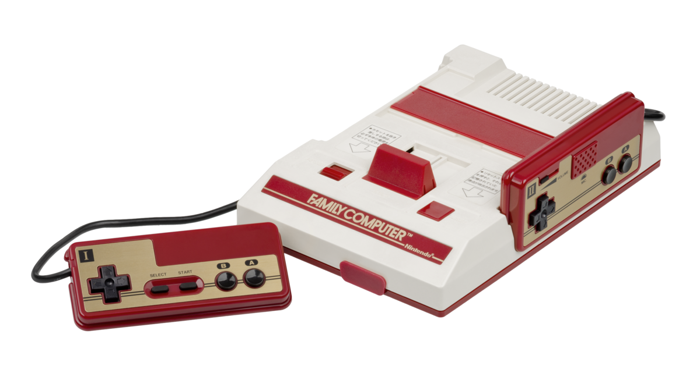

Mother is a role-playing game created by Shigesato Ito and published by Nintendo. The first game was titled Mother and was released in japan on july 27 1989 and was meant to be played on the Famicom gaming system.
The franchise didn't get international recognition till 1994 with the release of Earthbound which was called Mother 2 in Japan and released for the SNES (Super Nintendo Entertainment System). The person you play as is a young boy named Ness who has to save the world from the alien Giygas and to do so you have to recruit power allies to help you with this mission. The second installment was a major success in Japan but the US not so much, only selling 72.000 copies.With these stats in mind Shigesato started to get to work and make the last Mother game Mother 3.

Mother 3 is the final game in the Mother franchise with it being released on April 20th 2006 for the Game Boy Advance. Like all Mother games it's a role-playing where you play as a child named Lucas who has to stop the destruction of the world from the evil being named Proky. What makes this game different from the other Mother games is that it never released outside japan. Many fans have tried to figure out why the game was never released but most came to the conclusion it's because of the games content Mother3 has very surious topics in the game that Nintendo thought would be to surious for a global audience which is why the game was never released outside of japan.